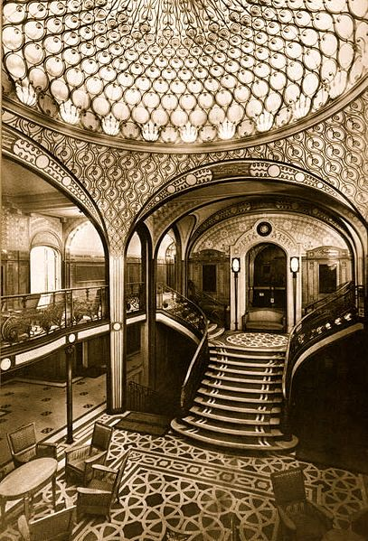
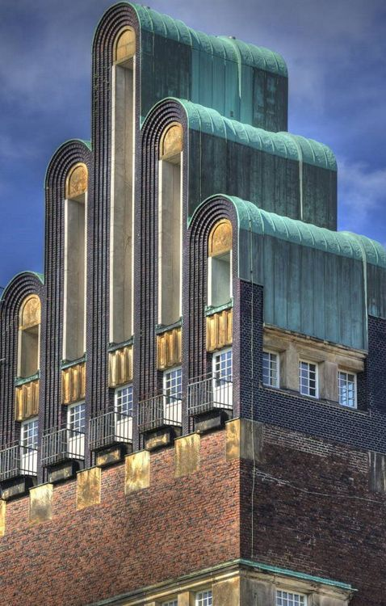

Art Deco, sometimes referred to as Deco, is a style of visual arts, architecture and design that first appeared in France just before World War I.[1] Art Deco influenced the design of buildings, furniture, jewelry, fashion, cars, movie theatres, trains, ocean liners, and everyday objects such as radios and vacuum cleaners.[2] It took its name, short for Arts Décoratifs, from the Exposition Internationale des Arts Décoratifs et Industriels Modernes (International Exhibition of Modern Decorative and Industrial Arts) held in Paris in 1925.[3] It combined modernist styles with fine craftsmanship and rich materials. During its heyday, Art Deco represented luxury, glamour, exuberance, and faith in social and technological progress.
Art Deco was a pastiche of many different styles, sometimes contradictory, united by a desire to be modern. From its outset, Art Deco was influenced by the bold geometric forms of Cubism; the bright colors of Fauvism and of the Ballets Russes; the updated craftsmanship of the furniture of the eras of Louis Philippe and Louis XVI; and the exotic styles of China and Japan, India, Persia, ancient Egypt and Maya art. It featured rare and expensive materials, such as ebony and ivory, and exquisite craftsmanship. The Chrysler Building and other skyscrapers of New York built during the 1920s and 1930s are monuments of the Art Deco style.
IArt Deco took its name, short for Arts Décoratifs, from the Exposition Internationale des Arts Décoratifs et Industriels Modernes held in Paris in 1925,[3] though the diverse styles that characterize Art Deco had already appeared in Paris and Brussels before World War I.
During the 1925 Exposition the architect Le Corbusier wrote a series of articles about the exhibition for his magazine L'Esprit Nouveau under the title, "1925 Expo: Arts Déco" which were combined into a book, "L'art décoratif d'aujourd'hui" (Decorative Art Today). The book was a spirited attack on the excesses of the colorful and lavish objects at the Exposition; and on the idea that practical objects such as furniture should have any decoration at all; his conclusion was that "Modern decoration has no decoration".
Art Deco was a pastiche of many different styles, sometimes contradictory, united by a desire to be modern. From its outset, Art Deco was influenced by the bold geometric forms of Cubism; the bright colors of Fauvism and of the Ballets Russes; the updated craftsmanship of the furniture of the eras of Louis Philippe and Louis XVI; and the exotic styles of China and Japan, India, Persia, ancient Egypt and Maya art. One of the best known and certainly the largest Art Deco sculpture is the Christ the Redeemer by the French sculptor Paul Landowski, completed between 1922 and 1931, located on a mountain top overlooking Rio de Janeiro, Brazil. François Pompon was a pioneer of modern stylized animalier sculpture. He was not fully recognized for his artistic accomplishments until the age of 67 at the Salon d'Automne of 1922 with the work Ours blanc, also known as The White Bear, now in the Musée d'Orsay in Paris. It featured rare and expensive materials, such as ebony and ivory, and exquisite craftsmanship. The Chrysler Building and other skyscrapers of New York built during the 1920s and 1930s are monuments of the Art Deco style.
The emergence of Art Deco was closely connected with the rise in status of decorative artists, who until late in the 19th century had been considered simply as artisans. The term "arts décoratifs" had been invented in 1875, giving the designers of furniture, textiles, and other decoration official status. The Société des artistes décorateurs (Society of decorative artists), or SAD, was founded in 1901, and decorative artists were given the same rights of authorship as painters and sculptors. A similar movement developed in Italy. The first international exhibition devoted entirely to the decorative arts, the Esposizione international d'Arte decorative moderna, was held in Turin in 1902. Several new magazines devoted to decorative arts were founded in Paris, including Arts et décoration and L'Art décoratif moderne. Decorative arts sections were introduced into the annual salons of the Sociéte des artistes français, and later in the Salon d'automne. French nationalism also played a part in the resurgence of decorative arts; French designers felt challenged by the increasing exports of less expensive German furnishings. In 1911, the SAD proposed the holding of a major new international exposition of decorative arts in 1912. No copies of old styles were to be permitted; only modern works. The exhibit was postponed until 1914, then, because of the war, postponed until 1925, when it gave its name to the whole family of styles known as Déco.

Art Deco took its name, short for Arts Décoratifs, from the Exposition Internationale des Arts Décoratifs et Industriels Modernes held in Paris in 1925, though the diverse styles that characterize Art Deco had already appeared in Paris and Brussels before World War I. The term arts décoratifs was first used in France in 1858; published in the Bulletin de la Société française de photographie.[6] In 1868, Le Figaro newspaper used the term objets d'art décoratifs with respect to objects for stage scenery created for the Théâtre de l'Opéra. Most of the sculpture of the Art Deco period was, as the name suggests, purely decorative; it was designed not for museums, but to ornament office buildings, government buildings, public squares, and private salons. It was almost always representational, usually of heroic or allegorical figures related to the purpose of the building; the themes were usually chosen by the patron, and abstract sculpture for decoration was extremely rare. It was frequently attached to facade of buildings, particularly over the entrance.
The Art Deco style appeared early in the graphic arts, in the years just before World War I. It appeared in Paris in the posters and the costume designs of Leon Bakst for the Ballets Russes, and in the catalogs of the fashion designers Paul Poiret.[75] The illustrations of Georges Barbier, and Georges Lepape and the images in the fashion magazine La Gazette du bon ton perfectly captured the elegance and sensuality of the style. In the 1920s, the look changed; the fashions stressed were more casual, sportive and daring, with the woman models usually smoking cigarettes. American fashion magazines such as Vogue, Vanity Fair and Harper's Bazaar quickly picked up the new style and popularized it in the United States. It also influenced the work of American book illustrators such as Rockwell Kent. In Germany, the most famous poster artist of the period was Ludwig Hohlwein, who created colorful and dramatic posters for music festivals, beers, and, late in his career, for the Nazi Party.